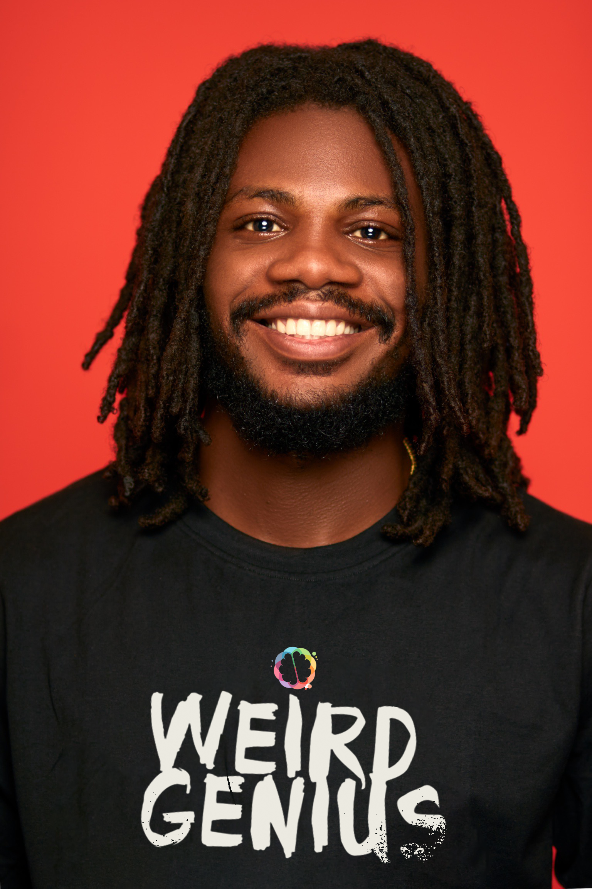

FREDRICK OKOJIE

SUMMARY/OBJECTIVES
I’m passionate about building great products that make people’s lives easier.
Strategy and results-driven digital
manager, entrepreneurially minded problem solver
7+ years of experience building paid and organic marketing funnels for companies
in different sectors like
hospitality, medical facilities, real estate companies and others.
Bringing forth broad marketing knowledge, coupled with focused campaign experience.
Adept at creating and implementing client-centered, successful campaigns,
aimed at improving brand awareness
and presence.
Collaborative and creative manager accomplished at managing digital
marketing presence content.
Experienced in leading teams of marketing professionals to meet and exceed
digital marketing goals.
Marketing efforts i have overseen have generated roughly 41% increase in revenue
for the businesses i have
impacted.
EDUCATION
HND Computer Science
Rivers State Polytechnic
2015 - 2019
SSCE
Command Secondary School
2004 - 2010
First School Certificate
Command Children School
1997 - 2003
WORK EXPERIENCE
Creative Manager
Giselle Homes Ltd.
Dec 2016 - Till Date
- Revamped marketing and helped to grow overall revenue by
18%
- Led execution of strategic planning - facilitated strategic
planning process to clearly articulate client companies' vision,
mission, value proposition, brand architecture and positioning
- Spearheaded creative designs for lead and traffic generation
- Originated Strategic Campaign flyers and banners for brand
visibility and revenue generation
Digital Manager/IT support Officer
BlueCoral Healthcare Services
Sept 2022 - Dec 2023
- Evaluated client websites for mobile performance and optimal
search engine rankings.
- Developed unique content to improve presence and brand
awareness
- Organized and analyzed data and marketing results.
- Introduced scheduled targeted email marketing programs
- Generated a 100% uplift in organic traffic to the website in 2
months through extensive seo
- Successfully boosted the company revenue by 21% with well
targeted social media ads and other online ad funnels.
Creative Manager
De-Genius Digital Marketing Agency
May 2022 - Aug 2022
- Responsible for all company’s creative designs
- Designed eye catching designs to promote company brand and
awareness
- Directed and shot and edited videos for ad campaigns to drive
traffic to the business
- Consistent execution of customer brand photography
Online Advertising Manager
Kafia.com.ng
Mar 2015 - Jan 2016
- Educated other staffs on 100% keywords content writing
- Successful writing of company’s privacy policy and T&C
- Oversaw the proper captioning of products before posting
online
- Adept at creating and implementing client-centered,
successful campaigns, aimed at improving brand awareness
and presence.
Administrator
Salsee Cyber Cafe
Feb 2014 - Jan 2015
- Performed general accounting and IT auditing services
- Successfully controlled and oversaw sales activities
SKILLS
- SALES FORCE
- GOOGLE SHEETS
- ADOBE CLOUD (Photoshop, Illustrator, Premier Pro, After Effects & Animate)
- SEO
- KPI TRACKING
- PAID ACQUISITION
- VISUAL STUDIO CODE
OTHER LINKS